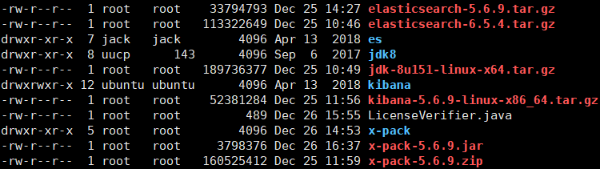

准备好环境：ES和kibana已经安装的情况
- elasticsearch和kibana一定要是与x-pack相同的版本。（我使用的是5.6.9稳定版本）

分别在ES和Kibana中安装x-pack：
- 在线安装命令：
- 进入es的主目录文件夹下执行(会自动选择适合你的版本):
cd /opt/es
1 | bin/elasticsearch-plugin install x-pack |
离线安装方式：
下载压缩包：
- 官方链接：x-pack-5.6.9.zip
- 我的网盘：密码：x7wz
- 将下载好的压缩包直接放入任意一个路径下面
进入es的主目录下执行：
1
bin/elasticsearch-plugin install file:///path/to/your/x-pack-5.6.9.zip
安装过程会提示输入y/N ,记得输入y,给x-pack赋予权限而已。
kibana中的安装步骤一样：
- 进入到kibana的主目录下
cd /opt/kibana
1 | bin/kibana-plugin install x-pack |
或者1
bin/kibana-plugin install file:///path/to/your/x-pack-5.6.9.zip
- 注：在kibana中安装x-pack比较慢
安装完毕之后，进入es以及kibana会提示输入用户名和密码：

- 原始的用户名和密码：
elastic changeme
- kibana 也是如此，但是kibana可以用自己的用户登录：
kibana changeme
x-pack-5.6.9这个版本我翻了很多文件夹都没有找到修改密码的那个可执行文件：setup-password
- 具体什么原因我也不知道，但是可以在kibana中进行修改密码：
2.
3.
- 根据提示，输入原始密码和新密码就可以更改了。
- 注意：elastic用户可以访问elasticsearch和kibana以及logstash，而kibana用户只能访问kibana。
注意：安装之后java客户端调用也会进行验证，我目前使用的是http请求进行通信服务器
需要加入以下代码
1
2
3
4
5
6
7
8
9
10
11
12
13
14
15
16
17
18
19
20
21
22
23
24
25
26
27
28RestHighLevelClient connect() {
if (restClient == null) {
restClient = buildRestClient();
}
return new RestHighLevelClient(restClient);
}
private RestClient buildRestClient() {
final CredentialsProvider credentialsProvider =
new BasicCredentialsProvider();
credentialsProvider.setCredentials(AuthScope.ANY,
new UsernamePasswordCredentials("elastic", "xxxxxx"));
return RestClient.builder(createHttpHosts().toArray(new HttpHost[0]))
.setHttpClientConfigCallback(new RestClientBuilder.HttpClientConfigCallback() {
public HttpAsyncClientBuilder customizeHttpClient(HttpAsyncClientBuilder httpClientBuilder) {
return httpClientBuilder.setDefaultCredentialsProvider(credentialsProvider);
}
})
.setRequestConfigCallback(requestConfigBuilder -> {
requestConfigBuilder.setConnectTimeout(5000);
requestConfigBuilder.setSocketTimeout(50000);
requestConfigBuilder.setConnectionRequestTimeout(1000);
return requestConfigBuilder;
}).setMaxRetryTimeoutMillis(5 * 60 * 1000)
.build();
}导入的包是：